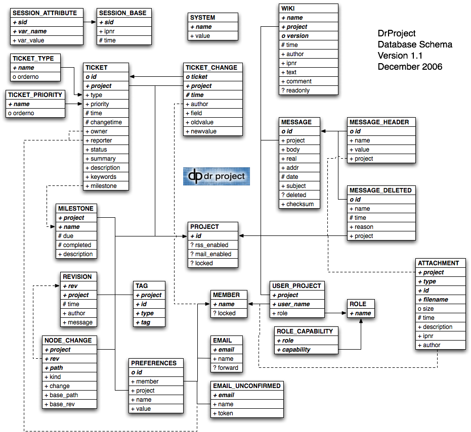

Show Me The Data
Having written several articles about how DrProject works, I figured it was time to talk about how its database is organized. Of course, that meant figuring it out myself, which took some digging: I eventually dumped the PostgreSQL schema and started doodling. The result is cleaner than I expected, though there are a few fields whose purpose I still don’t understand:

The dashed lines indicate constraints that aren’t enforced by the database; we’ll make them explicit as part of Version 1.2. We probably won’t tidy up the inconsistent names of fields, though—we’re trying hard to make sure that 1.2 doesn’t require schema changes. Oh, and the fields marked as dates and Booleans (‘#’ and ‘?’ respectively, as opposed to ‘o’ for integer and ‘+’ for text) are actually stored as integers right now (Unix timestamps and 0/1, also respectively). I think this is a holdover from SQLite, but again, I’ll dig.
Outstanding questions:
- How are sessions tied to users? Is one of the session's attributes the user ID after login?
- Is the 'author' field of the 'WIKI' table required to be a valid user ID? (I think so, but I didn't add it…)
- Why do we cache message headers for email messages? Which ones do we cache?
- What are the 'real' and 'addr' fields of the 'MESSAGE' table for?
- Why do we checksum messages, when we don't checksum anything else?
- What is the 'name' field of 'MESSAGE_DELETED' for?
- What are the legal values for the 'type' of an attachment? Is it the MIME type of the file, or the type of DrProject entity (e.g. wiki page vs. ticket) the thing is attached to? (And we really have to start versioning attachments properly…)
- How can we get away with only using 'id' as a key for 'PREFERENCES'? Shouldn't the key be '(id, member)'? And why is 'project' a field of 'PREFERENCES'? Are there project-specific preferences?
- What is the 'id' field of 'TAG' for? What are the legal values for 'type'? (I'm presuming it records the type of thing the tag is applied to, in which case, shouldn't there be an enumeration table as there is for ticket priorities and statuses?)
- I ''think'' that 'REVISION' caches information about Subversion changesets, while 'NODE_CHANGE' caches information about changes to particular entites (files and directories). If that's the case, what's the difference between 'kind' and 'change' in 'NODE_CHANGE'?
- As I understand it, changes to milestones aren't versioned (there doesn't appear to be provision in 'MILESTONE' for versioning). Can someone please confirm?
- Why does 'TICKET' have 'keywords'? Isn't this subsumed by the 'TAG' table?